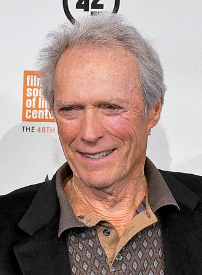

Clinton Eastwood Jr. (born May 31, 1930) is an American actor and film director. After achieving success in the Western TV series Rawhide, Eastwood rose to international fame with his role as the "Man with No Name" in Sergio Leone's Dollars Trilogy of spaghetti Westerns during the mid-1960s and as antihero cop Harry Callahan in the five Dirty Harry films throughout the 1970s and 1980s. These roles, among others, have made Eastwood an enduring cultural icon of masculinity.Elected in 1986, Eastwood served for two years as the mayor of Carmel-by-the-Sea, California.
